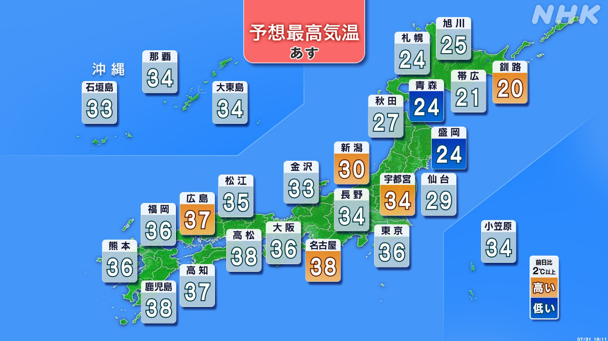

最新ニュース
1️⃣ 熊本の地震 35人が亡くなった
熊本県で大きい地震が起こってから、3日が過ぎました。
熊本県は、地震の被害について発表しました。
亡くなった人は35人です。この中の1人は、地震と関係があるかどうか調べています。
9人は、八代市の工場で働いていました。
7人は、爆発があった嘉島町のショッピングセンターで見つかりました。
避難所は370ぐらいあって、9000人以上が避難しています。
水道が止まっている家や建物は7万9000ぐらいです。
2️⃣ 車の中に避難している人は「エコノミークラス症候群」に気をつけて
熊本では、車の中で避難している人がたくさんいます。
家が壊れたり、電気が止まってエアコンを使うことができなくなったりしているからです。
車の中に長い時間いると、足に血のかたまりができて肺の血管がつまって亡くなることがあります。「エコノミークラス症候群」と呼ばれています。
専門家は、「エコノミークラス症候群」にならないように、次のことに気をつけるように言っています。
2時間か、3時間たったら、車から降りて、歩いてください。
足のふくらはぎをマッサージしてください。
車の中では、いすを倒して足を伸ばしてください。
3️⃣ 高市総理大臣「食べ物などの消費税を1％に下げる」
消費税についてのニュースです。
食べ物と飲み物の消費税は、今、8％です。
高市総理大臣は30日、来年4月から2年、食べ物などの消費税を1％に下げることを考えていると言いました。
収入が少ない人には、国が消費税1％と同じぐらいのお金を出して、消費税がゼロになるのと同じようにすることを考えています。
そして、自民党の中で意見をまとめるように言いました。
高市総理大臣は、今年の秋の国会で、法律を作りたいと言っています。
4️⃣ これからも暑い日が続きそう

31日もとても暑くなりました。奈良県、高知県、宮崎県では、40℃近くまで気温が上がりました。
1日から8月です。これからも暑い日が続きそうです。
気象庁によると、1日は28の県などに、「熱中症警戒アラート」が出ています。熱中症に気をつけてください。
大きな地震があった熊本県にも「熱中症警戒アラート」が出ています。
地震で壊れた家などを外で片づけるときは、少しでも涼しい時間に行ってください。長い時間続けないで、何度も休んでください。
バケツに水を入れて手や足をつけると、体を冷やすことができます。
- 〜てから
- 〜すぎる
- 〜から
- 〜について
- 〜がある / 〜がいる
- 〜中
- 〜ている / 〜でいる
- 〜以上
- 〜ところ
- 〜くらい / 〜ぐらい
- 〜たり〜たりする
- 〜こと
- 〜ことができる
- 〜ことがある
- 〜ように
- 〜になる
- 〜ならない
- 〜てください / 〜でください
- 〜など
- 〜ようにする
- 〜ても / 〜でも
- 〜まで
- 〜そうだ
- 〜によると
- 〜ないで
vebaev.github.io
Generated: 2026-07-31 12:56:57 UTC